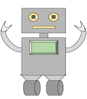

<!doctype html>
<html>
<head>
  <title>My experiment</title>
  <script src="https://ajax.googleapis.com/ajax/libs/jquery/1.11.1/jquery.min.js"></script>
  <script src="jspsych/jspsych.js"></script>
  <script src="jspsych/plugins/jspsych-text.js"></script>
  <script src="jspsych/plugins/jspsych-single-stim.js"></script>
  <script src="round-plugin.js"></script>
  <link href="jspsych/css/jspsych.css" rel="stylesheet" type="text/css"></link>
</head>
<body>
</body>
<script>

 /* define welcome message block */
 var welcome_block = {
  type: "text",
  text: "Welcome to the experiment. Press any key to begin."
};

/* define instructions block */
var instructions_block = {
  type: "text",
  text: "<p>In this experiment, you will be dealt a hand of cards, " +
  "and you will see the hand's total. You will have the option to draw another card.</p>" +
  "<p>If your hand's total  is <strong>over 21</strong>, you lose " +
  "and no points are added to your total score.</p>" +
  " <p>If your hand's total is <strong>under 21</strong>, you win " +
  "and the hand's total is added to your total score.</p>" +
  "<p> Draw a card by pressing Y for yes, or N for no when prompted.</p>"+
  "<div class='left center-content'></img>" +
  "<p>This robot will give you advice at the end of every round. You will " +
  "have the option to change your decision to agree with him, or not, by " +
  "pressing Y for yes and N for no.</p>"+
  "<p>Press any key to begin.</p>",
  timing_post_trial: 1500
};

var total_score = 0


var test_block = {
  type: "round",
  total_score: function() {return total_score},
  on_finish:
    total_score = total_score, // how to update?,
  timeline: [
  {advice_type: 0},
  {advice_type: 0},
  {advice_type: 0},
  {advice_type: 0},
  {advice_type: 0},
  {advice_type: 0},
  {advice_type: 0},
  {advice_type: 0},
  {advice_type: 0},
  {advice_type: 0},
  {advice_type: 1},
  {advice_type: 2}


  // Concerns: total score carries over to next round but doesn't reflect the whole sum
  // Also, pressing a key skips the rest of the dialog and jumps to the next round's start screen
  // Experiment only runs if total score logging in the endtrial function in the plugin is commented out

    ]
  }


  /* create experiment timeline array */
  var timeline = [];
  timeline.push(welcome_block);
  //timeline.push(instructions_block);
  timeline.push(test_block);

  /* start the experiment */
  jsPsych.init({
    timeline: timeline,
  });
</script>
</html>
